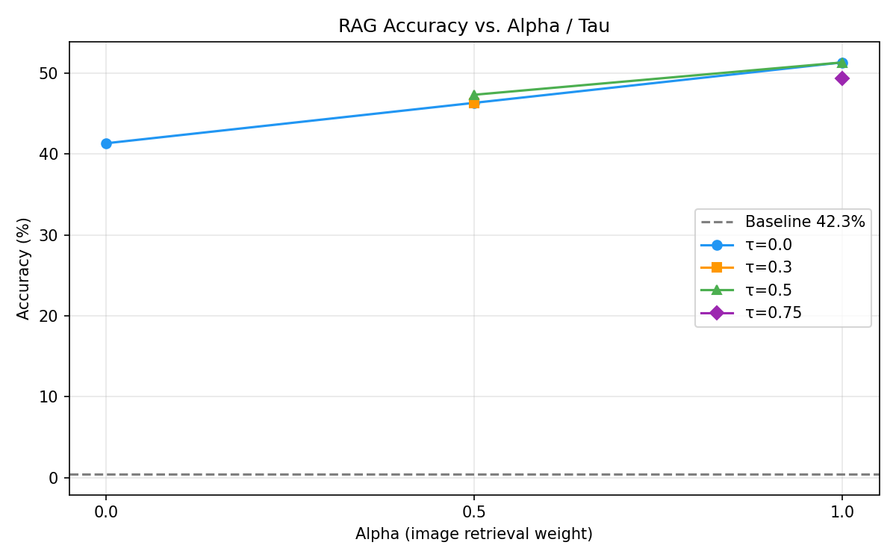
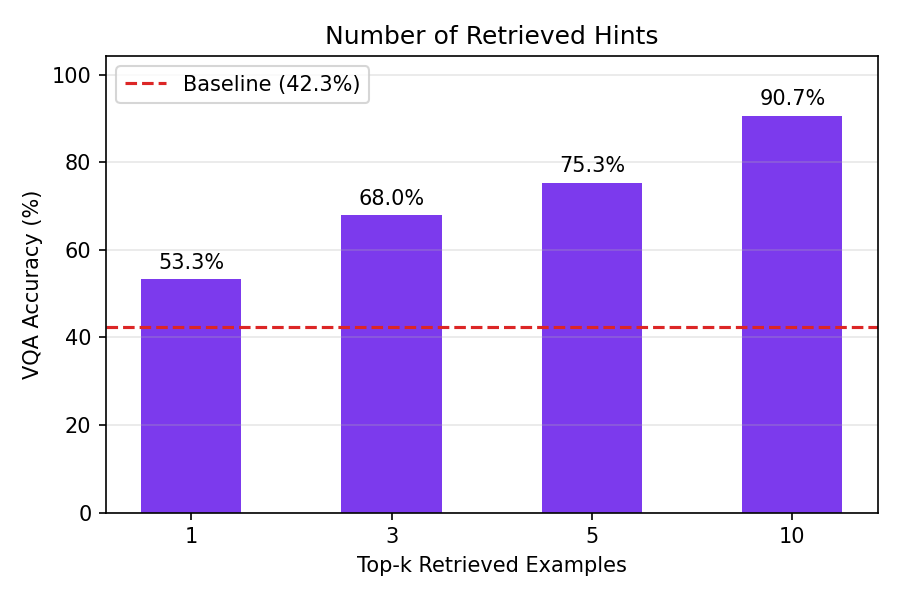
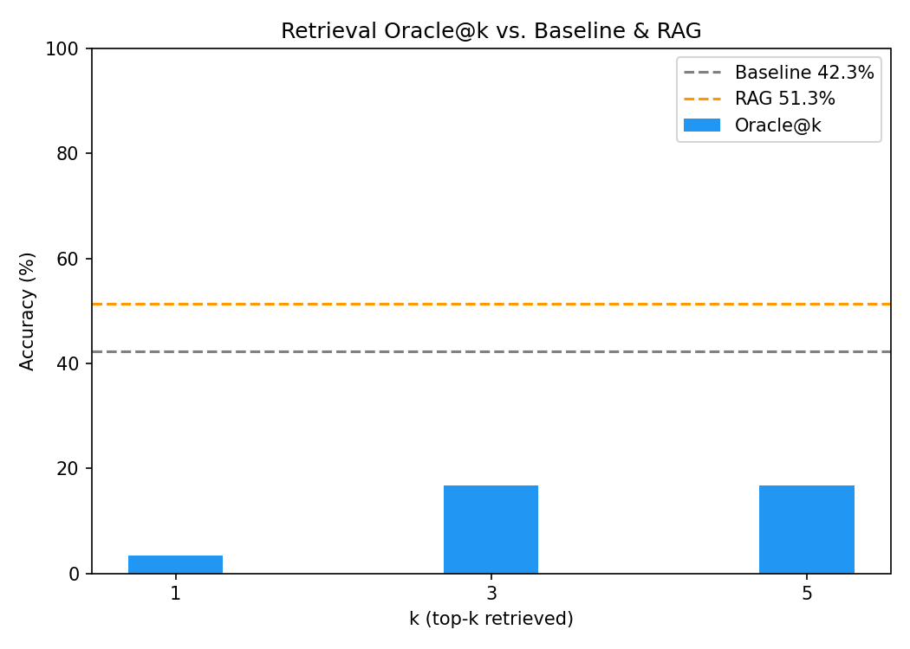
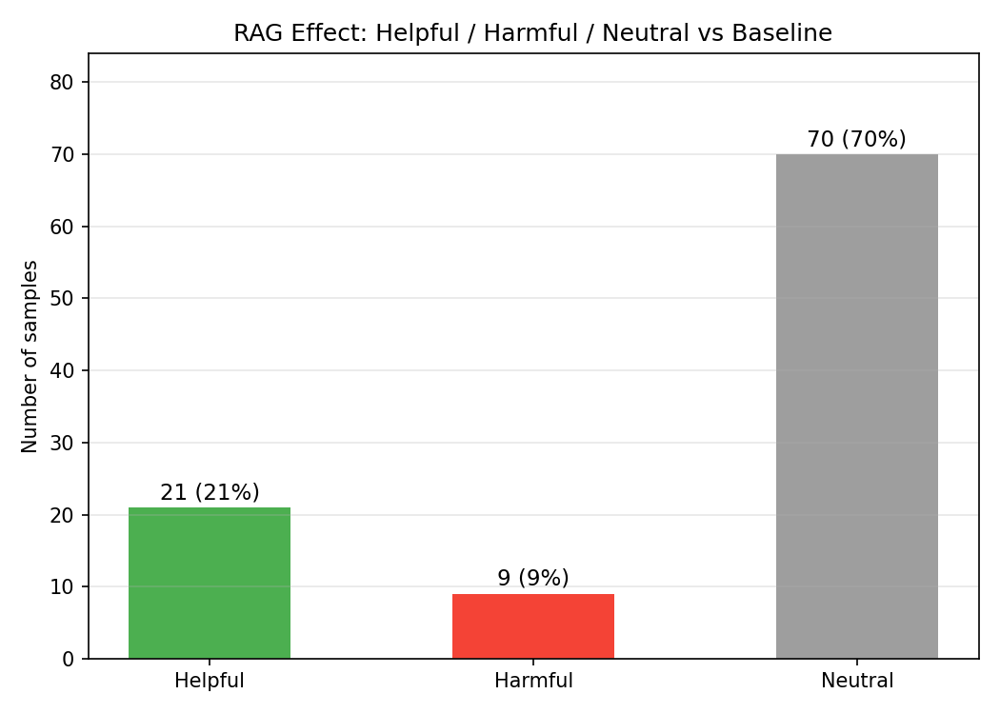
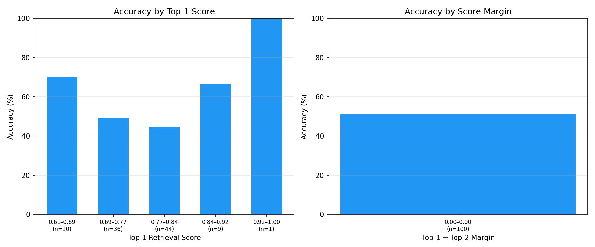

Open-Book VQA
Visual Memory-Augmented
BLIP-2 with CLIP Retrieval
Standard VQA is a Closed-Book Exam
Closed-Book (Standard VQA)
Model sees one image + question.
Must answer from internal weights alone.
No access to prior examples or similar cases.
Hard questions about rare objects, unusual angles, or uncommon answers may never appear in training distribution. The model has no fallback.
Open-Book (This Project)
Model retrieves similar past VQA examples
from a visual memory before answering.
Uses retrieved Q&A pairs as contextual hints.
Key question: can a frozen VQA model answer better if it can look up visually similar past examples?
Visual Question Answering
- Image — a natural photograph
- Question — a short natural-language question about it
- A short natural-language answer (1–3 words)
- Evaluated with VQA soft accuracy: min(1, matches/3)
- Frozen BLIP-2 must answer from weights alone
- Fails on open-ended visual details (what color, how many, what type)
- Rare objects and uncommon scenes are underrepresented
- Retraining a 3B-parameter model is expensive
Goal: improve a frozen model at inference time using retrieval — no fine-tuning required for the main result.
Convert BLIP-2 into an Open-Book System
Before answering, the model retrieves the most visually similar past VQA examples from a knowledge base. Their Q&A pairs are prepended as contextual hints.
5,000 VQA examples stored as CLIP embeddings
CLIP + FAISS cosine similarity search
Top-k Q&A pairs prepended to BLIP-2 prompt
42.33% → 51.33% accuracy
End-to-End Pipeline
PIL → RGB
ViT-B/32
512-d embed
IndexFlatIP
5k KB
Retrieved hints
Formatted text
OPT-2.7B
- Salesforce/blip2-opt-2.7b
- Frozen ViT-G/14 + Q-Former + OPT-2.7B
- Loaded in 4-bit NF4 quantization
- openai/clip-vit-base-patch32
- Two FAISS indices: image + text
- Score fusion: α · img + (1−α) · txt
Hints:
- Similar image: <answer>
Question: <q>
Answer:
Fusion Score & Retrieval Gate
Finds similar questions.
Ignores visual content.
Image + text equally weighted.
Finds visually similar images.
Achieves 51.33%.
Skips retrieval if top-1 similarity is below threshold.
Consistent & Controlled Evaluation
Dataset
- VQAv2 validation split
- 100 samples, same across all runs
- Binary (yes/no) and open-ended questions
Metric
- VQA soft accuracy
- min(1, annotator_matches / 3)
- Accounts for human disagreement
Knowledge Base
- 5,000 entries, VQAv2 training split
- CLIP ViT-B/32 image + text embeddings
- Two FAISS IndexFlatIP indices
Baseline
- Frozen BLIP-2 (blip2-opt-2.7b), no retrieval
- Same prompt format, same eval set
- Quantized to 4-bit NF4 for GPU efficiency
Alpha / Tau Sweep — n=100
| Configuration | α | τ | Accuracy |
|---|---|---|---|
| Baseline (BLIP-2 only) | — | — | 42.33% |
| RAG text-only retrieval | 0.0 | — | 41.33% |
| RAG balanced | 0.5 | — | 46.33% |
| RAG balanced + gate | 0.5 | 0.5 | 47.33% |
| RAG image-only ★ Best | 1.0 | — | 51.33% |
| RAG image-only + gate | 1.0 | 0.75 | 49.33% |

Why Does Visual Retrieval Win?
Image retrieval (α=1.0)
- Similar images share objects, scenes, colors, actions
- Visual neighbors often have similar answer distributions
- CLIP image embeddings are rich and visually discriminative
Example: "Is the grass green?" — an image of a park retrieves other park images. Retrieved answers include "yes" and "green" — directly helpful.
Text retrieval (α=0.0) — hurts
- Short VQA questions are often generic: "What color?", "How many?"
- Same question form → different images → different answers
- CLIP text embeddings optimized for captions, not interrogatives
Example: "What color is the car?" text-retrieval finds other color questions — but about completely different cars. The retrieved answers are noise.
More Retrieved Examples → Higher Accuracy (α=1.0)

k=10 acts as a 10-shot prompt. Promising controlled result — future work should verify at scale.
RAG Outperforms Answer Overlap at Low k

How often does the exact answer appear among the top-k retrieved Q&A pairs?
| k | Overlap@k | RAG acc | Δ |
|---|---|---|---|
| 1 | 24.00% | 53.33% | +29 pts |
| 3 | 60.33% | 68.00% | +8 pts |
| 5 | 83.33% | 75.33% | −8 pts |
| 10 | 92.33% | 90.67% | −2 pts |
At k=1 and k=3, RAG exceeds answer overlap. The model combines its own visual reasoning with retrieved context — it is not copying.
RAG Strongly Helps Open-Ended Questions

Yes/No Questions (n=27)
Model already strong. Context adds noise.
Open-Ended Questions (n=73)
+13.7 pts — main driver of total gain
RAG Corrects More Than Twice As Many As It Breaks

Baseline wrong → RAG right
Baseline right → RAG wrong
Helpful:Harmful ratio = 2.3:1
Higher Retrieval Confidence → Better Accuracy

Finding
Higher CLIP top-1 retrieval score correlates with higher RAG accuracy.
Note on Score Range
Scores cluster between 0.61–1.0 — CLIP image embeddings are generally similar for natural photos (narrow dynamic range).
Limitation
Retrieval score alone is not sufficient — BLIP-2 does not always effectively utilize provided context even when retrieval is high quality.
QLoRA Adapters — Lightweight Adaptation
What We Did
- QLoRA fine-tuning on RAG-format prompts (hints format)
- LoRA rank r=16, α=32, 4-bit NF4 quantization
- Training data: ~3,000 RAG-formatted VQA examples
- Training loss decreased — model learned the prompt format
Result & Analysis
- Inference accuracy did not improve significantly over inference-time RAG
- OPT-2.7B backbone is mostly frozen — adapters cover few parameters
- Lightweight adaptation insufficient to shift generation behavior
Main result remains inference-time RAG. Fine-tuning is future work requiring more data, larger LoRA rank, or partial unfreezing of the language model.
Open-Book VQA — Summary
- Built open-book VQA: BLIP-2 + CLIP + FAISS pipeline
- Improved frozen BLIP-2 from 42.33% → 51.33% (+9 pts, +21% relative)
- Visual similarity is a stronger retrieval signal than question-text similarity
- RAG outperforms answer overlap at low k — model reasons over context
- Main gain is on open-ended questions (+14 pts)
- RAG slightly hurts yes/no questions (context adds noise)
- Generator does not always use retrieved evidence reliably
- 100-sample eval; full benchmark evaluation is future work
- Image-disjoint KB construction should be enforced more strictly
- Fine-tuning needs larger rank / more data to improve results